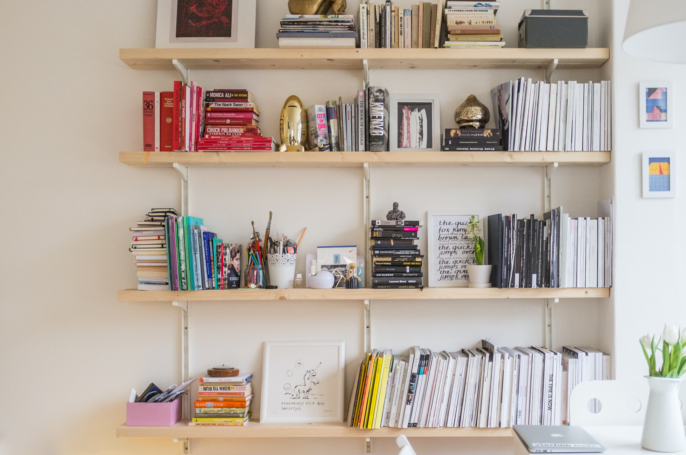
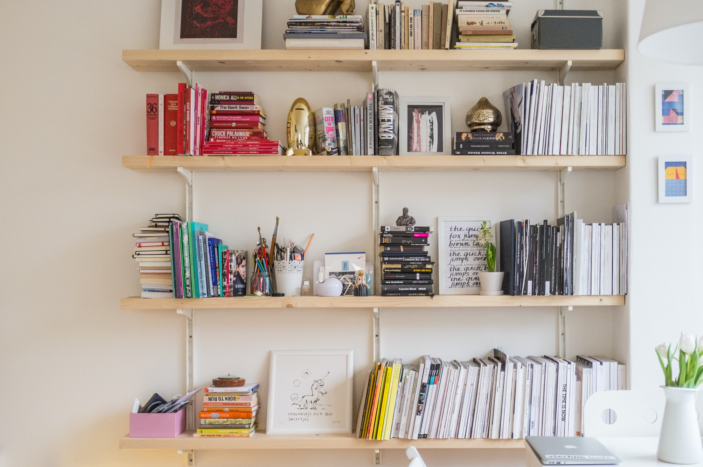

1.Camera: Capture Every Detail
A high-quality camera is the backbone of any YouTube setup. While smartphones can shoot decent videos, investing in a dedicated camera can significantly improve the visual appeal of your content. Popular choices include DSLRs and mirrorless cameras, offering superior image quality, manual controls, and interchangeable lenses for creative flexibility.Visit

2.Microphone: Crystal Clear Audio Matters
Clear and crisp audio is just as important as sharp visuals.
Viewers are quick to click away from videos with poor sound quality.
Invest in an external microphone to capture your voice with precision.
USB microphones like the Blue Yeti or XLR microphones like
the Shure SM7B are popular choices among YouTubers for their exceptional audio performance.Visit
3.Lighting: Illuminate Your Presence
Glighting can transform an ordinary video into a professional-looking production.
Natural light is excellent, but investing in studio lighting can provide consistency and control over your setup.
Softboxes and ring lights are popular options to achieve flattering and evenly distributed illumination, reducing shadows and enhancing the overall visual quality of your videos.Visit

4.Tripod: Stability for Professionalism
Astable camera is crucial for a polished and professional look.
Tripods come in various sizes and styles, from compact tabletop versions to full-size options for larger cameras.
A sturdy tripod helps eliminate shaky footage, ensuring your viewers stay focused on your content without distractions.Visit

5.Backdrop and Set Design: Create a Branded Space
Consider the backdrop of your videos as part of your personal brand.
Whether it's a neatly arranged bookshelf, a minimalist wall, or a custom-designed set,
a thoughtfully crafted backdrop can contribute to your channel's aesthetic and make your videos more visually appealing.
Or you can just simply use a green screen.Visit
 
Copyright © 2024 - 2025 Lumelens®. All rights reserved.
For any issue with the product contact Amazon's costumer care